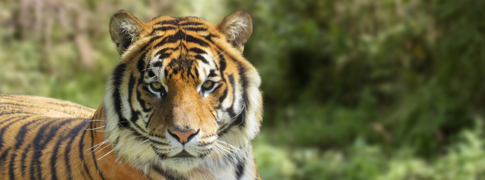

Tigre
El tigre (Panthera tigris) es una de las especies[3] de la subfamilia de los panterinos (familia Felidae) pertenecientes al género Panthera. Se encuentra solamente en el continente asiático; es un predador carnívoro y es la especie de félido más grande del mundo junto con el león, pudiendo alcanzar ambos un tamaño comparable al de los fósiles de félidos de mayor tamaño.
Pantera negra
La pantera negra es una variación melánica de varias especies de grandes félidos, en especial del leopardo (Panthera pardus) y del jaguar (Panthera onca). No es una nueva especie, ni siquiera una subespecie, es simplemente una variación negra de estos animales.
Leon
El león (Panthera leo) es un mamífero carnívoro de la familia de los félidos y una de las cinco especies del género Panthera. Los leones salvajes viven en poblaciones cada vez más dispersas y fragmentadas del África subsahariana (a excepción de las regiones selváticas de la costa del Atlántico y la cuenca del Congo) y una pequeña zona del noroeste de India (una población en peligro crítico en el parque nacional del Bosque de Gir y alrededores), habiendo desaparecido del resto de Asia del Sur, Asia Occidental, África del Norte y la península balcánica en tiempos históricos. Hasta hace aproximadamente diez mil años, a finales del Pleistoceno, el león era el más extendido de los grandes mamíferos terrestres tras los humanos. Su distribución cubría la mayor parte de África, gran parte de Eurasia, desde el oeste de Europa hasta la India, y en América, desde el río Yukón hasta el sur de México.